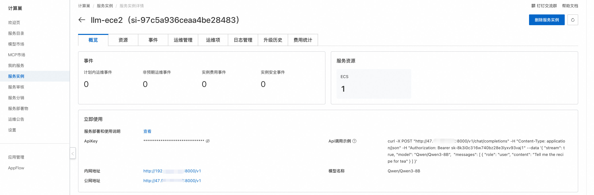
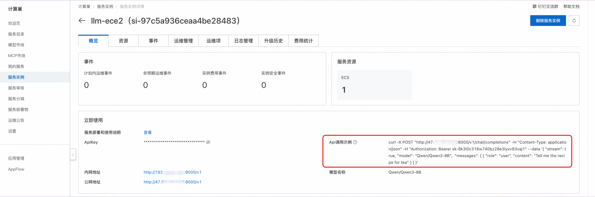

简介
DeepSeek-V3，是一个强大的专家混合（MoE）语言模型，总参数为 6710 亿，其中每个 token 激活 370 亿个参数。为了实现高效的推理和经济的训练成本，DeepSeek-V3 采用了多头潜在注意力（MLA）和 DeepSeekMoE 架构，这些架构在 DeepSeek-V2 中已经经过彻底验证。此外，DeepSeek-V3 率先采用了一种无辅助损失的负载平衡策略，并设定了多 token 预测的训练目标以提升性能。DeepSeek 在 14.8 万亿种多样且高质量的 token 上对 DeepSeek-V3 进行预训练，随后进行监督微调和强化学习阶段，以充分发挥其能力。全面评估表明，DeepSeek-V3 优于其他开源模型，并实现了与领先的闭源模型相当的性能。并且 DeepSeek-V3 仅需 2.788 百万 H800 GPU 小时即可完成全部训练。此外，其训练过程非常稳定。在整个训练过程中，没有遇到任何不可恢复的损失峰值，也未进行任何回滚操作。
使用说明
在完成模型部署后，可以在计算巢服务实例概览页面看到模型的使用方式，里面提供了Api调用示例、内网访问地址、公网访问地址和ApiKey，下面会分别介绍如何访问使用。

API调用
Curl命令调用

Curl命令调用可以直接使用服务实例概览页面中的Api调用示例，调用模型API的具体结构如下：
其中${ServerIP}可以填写内网地址或公网地址中的IP地址，${ApiKey}为ApiKey，${ModelName}为模型名称。
curl -X Post http://${ServerIP}:8000/v1/chat/completions \
-H "Content-Type: application/json" \
-H "Authorization: Bearer ${ApiKey}" \
-d '{
"model": "${ModelName}",
"messages": [
{
"role": "user",
"content": "给闺女写一份来自未来2035的信，同时告诉她要好好学习科技，做科技的主人，推动科技，经济发展；她现在是3年级"
}
]
}'
Python调用
以下为 Python 示例代码： 其中${ApiKey}需要填写页面上的ApiKey；${ServerUrl}需要填写页面上的公网地址或内网地址，需要带上/v1。
from openai import OpenAI
##### API 配置 #####
openai_api_key = "${ApiKey}"
openai_api_base = "${ServerUrl}"
client = OpenAI(
api_key=openai_api_key,
base_url=openai_api_base,
)
models = client.models.list()
model = models.data[0].id
print(model)
def main():
stream = True
chat_completion = client.chat.completions.create(
messages=[
{
"role": "user",
"content": [
{
"type": "text",
"text": "你好，介绍一下你自己，越详细越好。",
}
],
}
],
model=model,
max_completion_tokens=1024,
stream=stream,
)
if stream:
for chunk in chat_completion:
print(chunk.choices[0].delta.content, end="")
else:
result = chat_completion.choices[0].message.content
print(result)
if __name__ == "__main__":
main()
Web应用
点击在线访问链接，跳转到对应的页面就可以直接进行模型服务在线访问了。